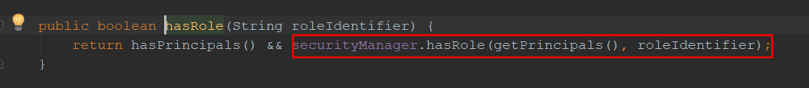
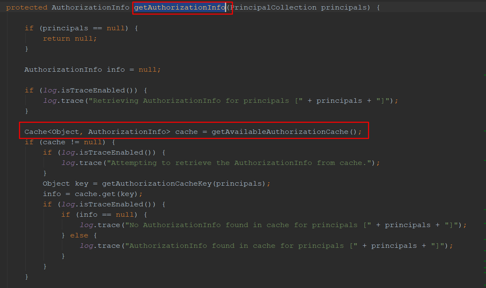

原文连接:https://www.cnblogs.com/seanRay/p/11842158.html
一.首先我们从整体去看一下授权流程，然后再根据源码去分析授权流程.如下图：

流程如下：
1、首先调用 Subject.isPermitted*/hasRole*接口，其会委托给 SecurityManager，而SecurityManager 接着会委托给 Authorizer；
2、Authorizer 是真正的授权者，如果我们调用如 isPermitted(“user:view”)，其首先会通过PermissionResolver 把字符串转换成相应的 Permission 实例；
3、在进行授权之前，其会调用相应的 Realm 获取 Subject 相应的角色/权限用于匹配传入的角色/权限；
4、Authorizer 会判断 Realm 的角色/权限是否和传入的匹配，如果有多个 Realm，会委托给ModularRealmAuthorizer 进行循环判断，如果匹配如 isPermitted*/hasRole*会返回 true，否则返回 false 表示授权失败。
二.从开发应用层角度
1.在controller中的某个方法上使用权限注解@RequiresRoles("role:admin")或者@RequiresPermissions("user:add")等注解，来进行权限控制

或者使用hasRole()方法
2. 进行授权必须先要进行登录认证，下面对hasRole()进行跟踪，会调用securityManage的hasRole()方法。

3.继续对securityManager的hasRole()方法跟踪，会进入AuthorizingRealm类中，调用getAuthorizationInfo（）方法
继续跟踪getAuthorizationInfo（）方法，这个方法里面首先会对principals做判断，然后再从缓存中去查询，如果再缓存中没有查到info,(我们这里没有没有使用缓存),就继续往下看，然后我们就看到了一个似曾相识的方法doGetAuthorizationInfo(),你没有看错，这个方法我们曾经见过，就是在自定义Realm类的时候里面要重写两个方法，一个是重写授权方法，一个是重写认证方法。

继续跟踪doGetAuthorizationInfo（），就会选择它的实现类，这里我们选择我们自定义的MyRealm类中，进入到重写方法中
首先根据登录的用户信息，去数据库查询该用户拥有的角色信息，然后把该用户所有的角色信息都放到authorizationInfo对象中，对于权限而言也是这样的，都放到authorizationInfo对象中
4. 我们继续返回到AuthorizingRealm类中，刚才在MyRealm中，把用户的角色和权限信息都放在了AuthorizationInfo对象中给返回来了，那么现在进行下一步的hasRole(roleIdentifier,info)
5. 继续跟踪hasRole()方法，首先会对info做非空的判断，最后再检测传入的roleIdentifier是否包含在info信息中。
以上就是授权角色的详细过程，对于权限的话自己可以去一步一步跟踪看源码是如何实现的！